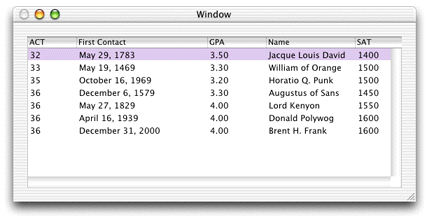

The columns for gpa and firstContact are
numeric, and you can set the numeric format style for column data
directly in Interface Builder. If you don't, the gpa column
defaults to an integer format, so the values will be rounded, making
that data less relevant. The firstContact column
defaults to a date format that includes the day of the week, information
that is not particularly useful for that attribute in this application.
To change the formatters, double-click one of the columns
and bring up the Info window. Choose Formatters from the pop-up
menu and select a formatter with a decimal point for the Gpa column
as shown in Figure 6-11.
Figure
6-11 Choose a formatter for the Gpa column
For the FirstContact column,
select a simple date format as shown in Figure 6-12.
Figure
6-12 Choose a formatter for the FirstContact column
Finally, capitalize the column names so that they're as shown in Figure 6-13.
Interface Builder provides the ability to test the application. It actually connects to the database and fetches data. You can test it by choosing File > Test Interface.
Figure 6-13 Testing the application
Note that because "Fetch on load" is enabled for the Student EODisplayGroup, the data is automatically fetched when you test the interface.